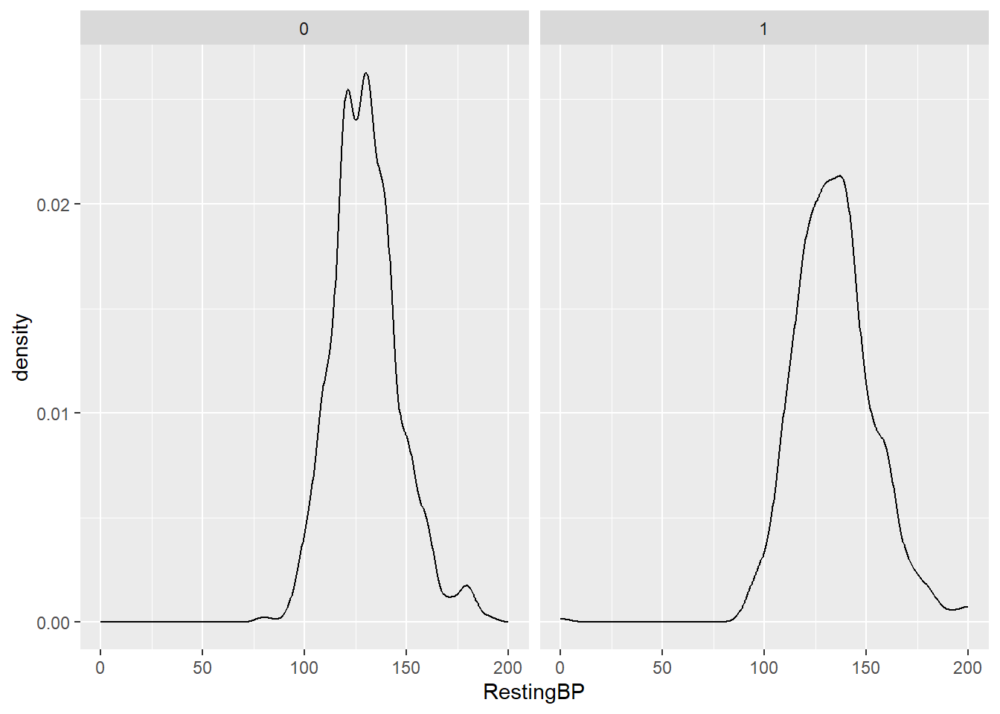
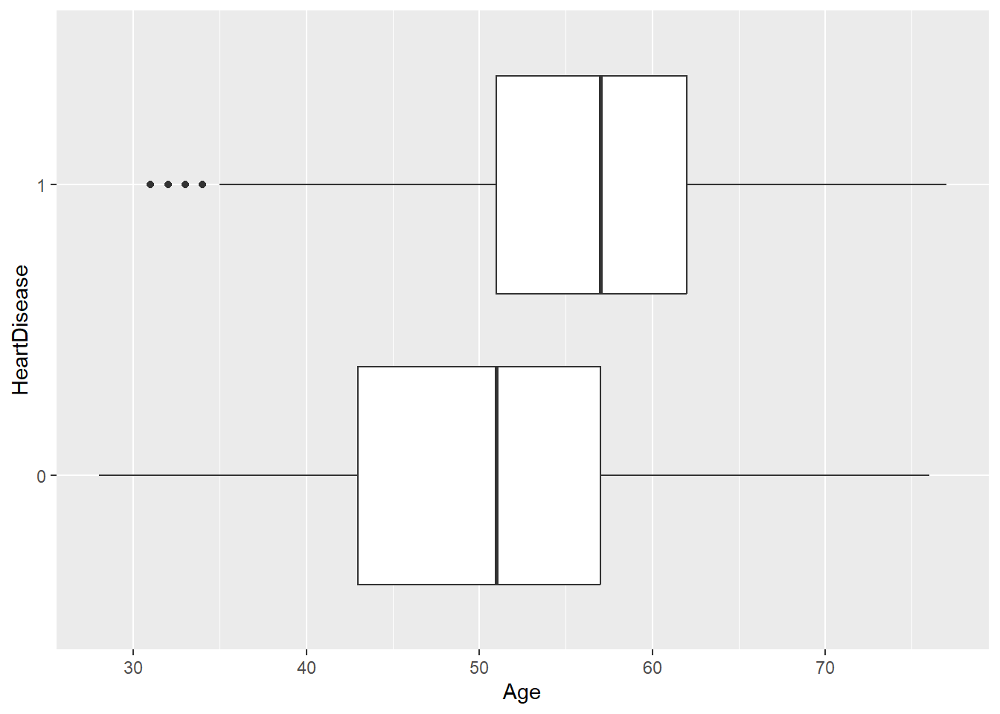
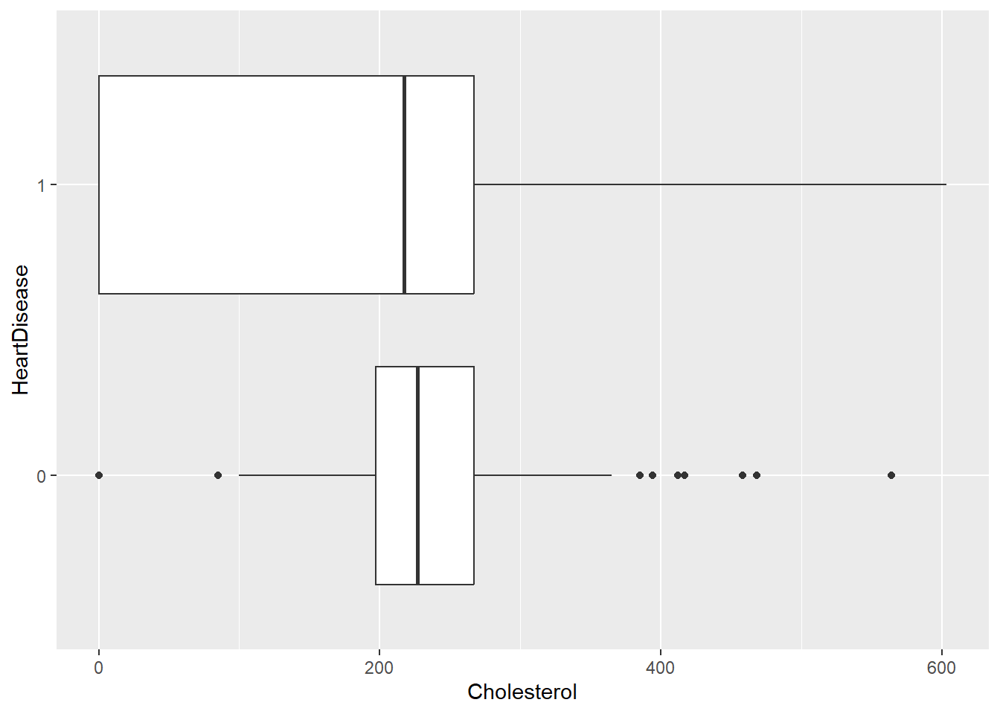
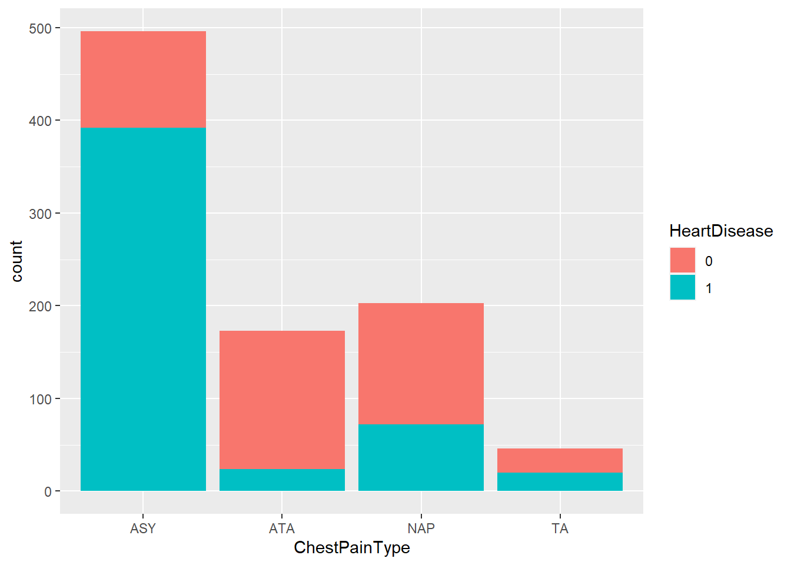

library(tidyverse)
#Read in the heart dataset.
heart_data <- read_csv("heart.csv")ST 558 Homework 5
Task 1: Conceptual Questions
Question 1: What is the purpose of using cross-validation when fitting a random forest model?
The purpose of cross validation in general is to split data multiple ways, do the fitting/testing process, and then combine results. Sometimes when using a training or test set you may not have enough data or you may get a weird split of the data so it can be helpful to split into many folds where you train on the first k-1 folds and test on the kth fold. Then repeat the process. In the context of a random forest model (and bagged tree models in general), this process happens by using out of bag observations. With repeated bootstrap samples, they only use about 2/3 of the data in the full sample so then you have a remaining portion to test on that wasn’t used in the training of the model.
Question 2: Describe the bagged tree algorithm.
The bagged tree algorithm represents bootstrap aggregation. The idea is that you get a bootstrap sample, train tree on this sample, and then resample with replacement and repeat the process B number of times. Then your final prediction is an average of these predictions if using a regression tree or use a majority vote (among other options) for classification trees. This method is more ideal than a single tree because it decreases the variability in the predictions.
Question 3: What is meant by a general linear model?
A general linear model is a model that has a continuous response variable and allows for both continuous and categorical predictors. This could be a simple linear regression, multiple linear regression, among others.
Question 4: When fitting a multiple linear regression model, what does adding an interaction term do? That is, what does it allow the model to do differently as compared to when it is not included in the model?
Adding an interaction term allows you to add a term that accounts for the relationship between two predictor variables through using the notation x1:x2. Then, you can fit a “best saddle” through the points, rather than simply a best plane. This enables you to have a more flexible surface to fit to the data and make predictions.
Question 5: Why do we split our data into a training and test set?
We split our data into a training and a test set so that we can train/fit the model on part of the data and then test how well the model is performing on the other part of the data. By doing this, we ensure that we are not overfitting the model to the data we have and that the model can generalize to data it hasn’t yet seen.
Quick EDA/Data Preparation - Questions 1 and 2.
Based on the EDA that follows, it appears that the following predictors have the strongest relationship to heart disease: * Categorical: ChestPainType, Sex, RestingECG, FastingBS, ExerciseAngina * Numeric: MaxHR, Cholesterol, Age
#Write over the heart dataset. Remove the ST_Slope column and convert the HeartDisease and FastingBS columns to factors.
heart_data <- heart_data |>
select(-ST_Slope) |>
mutate(HeartDisease = as.factor(HeartDisease),
FastingBS = as.factor(FastingBS))
#Print the first few rows of the dataset to check that it is working correctly.
head(heart_data)# A tibble: 6 × 11
Age Sex ChestPainType RestingBP Cholesterol FastingBS RestingECG MaxHR
<dbl> <chr> <chr> <dbl> <dbl> <fct> <chr> <dbl>
1 40 M ATA 140 289 0 Normal 172
2 49 F NAP 160 180 0 Normal 156
3 37 M ATA 130 283 0 ST 98
4 48 F ASY 138 214 0 Normal 108
5 54 M NAP 150 195 0 Normal 122
6 39 M NAP 120 339 0 Normal 170
# ℹ 3 more variables: ExerciseAngina <chr>, Oldpeak <dbl>, HeartDisease <fct>#Check for missing values. It appears there are no missing values.
missing_vals <- colSums(is.na(heart_data))
missing_vals Age Sex ChestPainType RestingBP Cholesterol
0 0 0 0 0
FastingBS RestingECG MaxHR ExerciseAngina Oldpeak
0 0 0 0 0
HeartDisease
0 #Make a stacked bar chart of heart disease by gender.
#It appears males get heart disease more frequently than females.
ggplot(heart_data, aes(x = Sex, fill = HeartDisease)) +
geom_bar()
#Make a stacked bar chart of heart disease by RestingECG
#It appears those with a RestingECG of ST or LVH are more likely to have heart disease.
ggplot(heart_data, aes(x = RestingECG, fill = HeartDisease)) +
geom_bar()
#Make a stacked bar chart of heart disease by fasting blood sugar.
#Info from data source: FastingBS: fasting blood sugar [1: if FastingBS > 120 mg/dl, 0: otherwise]
#It appears those with a fasting blood sugar above 120 have a higher likelihood of heart disease.
ggplot(heart_data, aes(x = FastingBS, fill = HeartDisease)) +
geom_bar()
#Make a stacked bar chart of heart disease by Exercise Angina.
#It appears those with Exercise Angina are more likely to have heart disease.
ggplot(heart_data, aes(x = ExerciseAngina, fill = HeartDisease)) +
geom_bar()
#Density Plot of Oldpeak faceted by Heart Disease.
#Looks like maybe higher. Not sure if significant. Investigate numerically down below.
ggplot(heart_data, aes(x = Oldpeak))+
geom_density() +
facet_wrap(~HeartDisease)
#Density Plot of Resting BP faceted by Heart Disease.
#It appears that resting BP is slightly higher in those with heart disease.
ggplot(heart_data, aes(x = RestingBP))+
geom_density() +
facet_wrap(~HeartDisease)
#Boxplots of age by heart disease.
#It appears that as age increases, likelihood of heart disease increases as well.
ggplot(heart_data, aes(x = Age, y = HeartDisease)) +
geom_boxplot()
#Boxplots of cholesterol by heart disease.
#Surprisingly, cholesterol appears lower with heart disease, but there is a lot of variability in the non-heart disease group.
ggplot(heart_data, aes(x = Cholesterol, y = HeartDisease)) +
geom_boxplot()
#Chest pain type and heart disease bar plots.
#It appears that ASY chest pain is a strong indicator of heart disease.
ggplot(heart_data, aes(x = ChestPainType, fill = HeartDisease)) +
geom_bar()
#Means of HR, Age, BP, and chol for those with and without heart disease.
#Group with heart disease has lower max HR, higher age, slightly higher BP, slightly lower Oldpeak, and lower cholesterol.
num_sums <- heart_data |>
group_by(HeartDisease) |>
summarize(mean_max_hr = mean(MaxHR),
mean_age = mean(Age),
mean_bp = mean(RestingBP),
mean_chol = mean(Cholesterol),
mean_oldpeak = mean(Oldpeak))
num_sums# A tibble: 2 × 6
HeartDisease mean_max_hr mean_age mean_bp mean_chol mean_oldpeak
<fct> <dbl> <dbl> <dbl> <dbl> <dbl>
1 0 148. 50.6 130. 227. 0.408
2 1 128. 55.9 134. 176. 1.27 Creating Dummy Variables - EDA Section #3
I am taking the approach of defining the numeric predictors in one dataset, the target response (HeartDisease) in another, and the dummy variables in another. Then I will use cbind to combine the columns.
#Read in the caret package.
library(caret)Loading required package: lattice
Attaching package: 'caret'The following object is masked from 'package:purrr':
lift#Save the numeric precitors as num_heart.
num_heart <- heart_data |>
select(Age, RestingBP, Cholesterol, MaxHR, Oldpeak)
#Save the target predictor (HeartDisaese) as target_heart.
target_heart <- heart_data |>
select(HeartDisease)
#Create the dummy variables using the dummyVars function from the caret package.
dummies <- dummyVars(HeartDisease ~ Sex + ExerciseAngina + ChestPainType + RestingECG, data = heart_data)
#use predict to create the new columns.
dummy_data <- predict(dummies, newdata = heart_data)
#Combine all the columns using cbind and then print the first few rows of the combined dataset.
heart_final <- cbind(num_heart, dummy_data, target_heart)
head(heart_final) Age RestingBP Cholesterol MaxHR Oldpeak SexF SexM ExerciseAnginaN
1 40 140 289 172 0.0 0 1 1
2 49 160 180 156 1.0 1 0 1
3 37 130 283 98 0.0 0 1 1
4 48 138 214 108 1.5 1 0 0
5 54 150 195 122 0.0 0 1 1
6 39 120 339 170 0.0 0 1 1
ExerciseAnginaY ChestPainTypeASY ChestPainTypeATA ChestPainTypeNAP
1 0 0 1 0
2 0 0 0 1
3 0 0 1 0
4 1 1 0 0
5 0 0 0 1
6 0 0 0 1
ChestPainTypeTA RestingECGLVH RestingECGNormal RestingECGST HeartDisease
1 0 0 1 0 0
2 0 0 1 0 1
3 0 0 0 1 0
4 0 0 1 0 1
5 0 0 1 0 0
6 0 0 1 0 0Split your Data
#Set the seeda at 100 for reproducibility.
set.seed(100)
#Use the createDataPartition from the caret package. Get 70% of the rows.
trainIndex <- createDataPartition(heart_final$HeartDisease, p =0.7, list = FALSE)
#Assign those 70% to the training dataset.
subheartTrain <- heart_final[trainIndex, ]
#Assign the rows not selected in the trainIndex (30% of data) to the test dataset.
subheartTest <- heart_final[-trainIndex, ]kNN
#Set the train control to repeated 10 fold cross validation with 3 repeats. This will be used later when training the model.
trctrl <- trainControl(method = "repeatedcv", number = 10, repeats = 3)
#Set seed for reproducibility.
set.seed(50)
#Based on EDA, I chose to use MaxHR, Age, and Cholesterol in the model. I chose to do main effect & all interaction terms.
#Use train function on the subheartTrain dataset created above.
#Want the k nearest neighbors method.
#Center and scale using preprocess.
#Create a tune grid data frame from 1 to 40 to pick the best number of number of neighbors to use.
knn_fit <- train(HeartDisease ~ MaxHR*Age*Cholesterol,
data = subheartTrain,
method = "knn",
trControl=trctrl,
preProcess = c("center", "scale"),
tuneGrid = data.frame(k = 1:40))
#It appears that the best fit was using 38 neighbors as this gave the highest accuracy.
knn_fitk-Nearest Neighbors
643 samples
3 predictor
2 classes: '0', '1'
Pre-processing: centered (7), scaled (7)
Resampling: Cross-Validated (10 fold, repeated 3 times)
Summary of sample sizes: 579, 579, 579, 578, 578, 580, ...
Resampling results across tuning parameters:
k Accuracy Kappa
1 0.6583903 0.3081245
2 0.6511713 0.2942888
3 0.6925593 0.3765131
4 0.6874571 0.3658178
5 0.7117851 0.4116240
6 0.7080253 0.4038321
7 0.7148054 0.4169604
8 0.7065925 0.4001360
9 0.7154467 0.4193568
10 0.7066003 0.4011126
11 0.7107184 0.4097874
12 0.7091471 0.4072795
13 0.7111911 0.4117797
14 0.7096532 0.4085153
15 0.7138048 0.4174519
16 0.7143585 0.4182444
17 0.7159127 0.4217937
18 0.7133406 0.4164781
19 0.7112490 0.4125544
20 0.7123558 0.4140627
21 0.7123232 0.4141756
22 0.7158964 0.4210745
23 0.7118106 0.4128212
24 0.7118184 0.4131228
25 0.7107114 0.4109575
26 0.7138852 0.4175201
27 0.7081307 0.4050051
28 0.7132589 0.4153256
29 0.7127947 0.4144195
30 0.7107437 0.4106005
31 0.7169621 0.4232290
32 0.7143900 0.4183421
33 0.7143735 0.4176673
34 0.7138449 0.4164574
35 0.7185572 0.4266578
36 0.7169539 0.4230656
37 0.7210967 0.4314960
38 0.7190212 0.4270569
39 0.7216093 0.4332619
40 0.7184758 0.4270742
Accuracy was used to select the optimal model using the largest value.
The final value used for the model was k = 39.#Test the model on the test data set.
knn_predict <- predict(knn_fit, newdata = subheartTest)
confusionMatrix(knn_predict, subheartTest$HeartDisease)Confusion Matrix and Statistics
Reference
Prediction 0 1
0 79 32
1 44 120
Accuracy : 0.7236
95% CI : (0.6667, 0.7756)
No Information Rate : 0.5527
P-Value [Acc > NIR] : 4.036e-09
Kappa : 0.4358
Mcnemar's Test P-Value : 0.207
Sensitivity : 0.6423
Specificity : 0.7895
Pos Pred Value : 0.7117
Neg Pred Value : 0.7317
Prevalence : 0.4473
Detection Rate : 0.2873
Detection Prevalence : 0.4036
Balanced Accuracy : 0.7159
'Positive' Class : 0
#This correctly predicts heart disease about 72.36% of the time in the test data set.Logistic Regression
Logistic Regression Model #1
#Not using dummy variables so using createDataPartition to select 70% of rows on the original data set.
set.seed(100)
trainIndex <- createDataPartition(heart_data$HeartDisease, p =0.7, list = FALSE)
#Using selected rows on heartTrain.
heartTrain <- heart_data[trainIndex, ]
#Using remaining rows on heartTest.
heartTest <- heart_data[-trainIndex, ]
#Fit first logistic regression model using only main interaction terms.
#Use the heartTrain dataset.
#Use method = glm to indicate a generalized linear model.
#Use family = binomial to indicate logistic regression.
#Preprocess the data and use the same 10 fold repeated cross validation as above.
log_fit_1 <- train(HeartDisease ~ ChestPainType + ExerciseAngina + FastingBS + MaxHR + Sex,
data = heartTrain,
method = "glm",
family = "binomial",
preProcess = c("center", "scale"),
trControl = trctrl)
#80.39% accuracy on training set.
log_fit_1Generalized Linear Model
643 samples
5 predictor
2 classes: '0', '1'
Pre-processing: centered (7), scaled (7)
Resampling: Cross-Validated (10 fold, repeated 3 times)
Summary of sample sizes: 580, 578, 579, 579, 578, 578, ...
Resampling results:
Accuracy Kappa
0.8035526 0.6014785#Use a confusion matrix to check accuracy on test set.
#This model has a 82.18% accuracy on test set.
confusionMatrix(data = heartTest$HeartDisease, reference = predict(log_fit_1, newdata=heartTest))Confusion Matrix and Statistics
Reference
Prediction 0 1
0 94 29
1 20 132
Accuracy : 0.8218
95% CI : (0.7714, 0.8652)
No Information Rate : 0.5855
P-Value [Acc > NIR] : <2e-16
Kappa : 0.6371
Mcnemar's Test P-Value : 0.2531
Sensitivity : 0.8246
Specificity : 0.8199
Pos Pred Value : 0.7642
Neg Pred Value : 0.8684
Prevalence : 0.4145
Detection Rate : 0.3418
Detection Prevalence : 0.4473
Balanced Accuracy : 0.8222
'Positive' Class : 0
Logistic Model #2
#Create a logistic model using all predictors. Based on EDA, it appeared that all variables had some effect on Heart Disease, although some were stronger predictors than others.
#Same dataset, method, trcontrol, family, etc. as defined above.
log_fit_2 <- train(HeartDisease ~ .,
data = heartTrain,
method = "glm",
family = "binomial",
preProcess = c("center", "scale"),
trControl = trctrl)
#80.77% accuracy on training set.
log_fit_2Generalized Linear Model
643 samples
10 predictor
2 classes: '0', '1'
Pre-processing: centered (13), scaled (13)
Resampling: Cross-Validated (10 fold, repeated 3 times)
Summary of sample sizes: 580, 578, 578, 578, 579, 580, ...
Resampling results:
Accuracy Kappa
0.8085562 0.6121884#Use a confusion matrix to check accuracy on test set.
#This model has a 84% accuracy on test set.
confusionMatrix(data = heartTest$HeartDisease, reference = predict(log_fit_2, newdata=heartTest))Confusion Matrix and Statistics
Reference
Prediction 0 1
0 98 25
1 19 133
Accuracy : 0.84
95% CI : (0.7912, 0.8813)
No Information Rate : 0.5745
P-Value [Acc > NIR] : <2e-16
Kappa : 0.6749
Mcnemar's Test P-Value : 0.451
Sensitivity : 0.8376
Specificity : 0.8418
Pos Pred Value : 0.7967
Neg Pred Value : 0.8750
Prevalence : 0.4255
Detection Rate : 0.3564
Detection Prevalence : 0.4473
Balanced Accuracy : 0.8397
'Positive' Class : 0
Logistic Model #3
#Create a logistic model using all possible combinations of some of the variables (and a main effect sex term that seemed most relevant (based on the EDA) to the prediction of Heart Disease.
#Same method, family, etc. as defined above.
log_fit_3 <- train(HeartDisease ~ ChestPainType*ExerciseAngina + FastingBS*MaxHR + Sex,
data = heartTrain,
method = "glm",
family = "binomial",
preProcess = c("center", "scale"),
trControl = trctrl)
#80.35% accuracy on training set.
log_fit_3Generalized Linear Model
643 samples
5 predictor
2 classes: '0', '1'
Pre-processing: centered (11), scaled (11)
Resampling: Cross-Validated (10 fold, repeated 3 times)
Summary of sample sizes: 578, 579, 580, 579, 579, 578, ...
Resampling results:
Accuracy Kappa
0.8026208 0.5996364#Use a confusion matrix to check accuracy on test set.
#This model has a 80.73% accuracy on test set.
confusionMatrix(data = heartTest$HeartDisease, reference = predict(log_fit_3, newdata=heartTest))Confusion Matrix and Statistics
Reference
Prediction 0 1
0 89 34
1 19 133
Accuracy : 0.8073
95% CI : (0.7556, 0.8522)
No Information Rate : 0.6073
P-Value [Acc > NIR] : 8.275e-13
Kappa : 0.6056
Mcnemar's Test P-Value : 0.05447
Sensitivity : 0.8241
Specificity : 0.7964
Pos Pred Value : 0.7236
Neg Pred Value : 0.8750
Prevalence : 0.3927
Detection Rate : 0.3236
Detection Prevalence : 0.4473
Balanced Accuracy : 0.8102
'Positive' Class : 0
Pick best logistic model.
Based on the accuracy metric, it appears that the logistic model #2 (using all predictors) has the highest accuracy on the test set. Here is the confusionMatrix again for log_fit_2 and a summary of it.
#Basic summary of model.
summary(log_fit_2)
Call:
NULL
Coefficients:
Estimate Std. Error z value Pr(>|z|)
(Intercept) 0.39472 0.11653 3.387 0.000706 ***
Age 0.18806 0.13052 1.441 0.149634
SexM 0.49881 0.11849 4.210 2.56e-05 ***
ChestPainTypeATA -0.68065 0.13195 -5.159 2.49e-07 ***
ChestPainTypeNAP -0.60781 0.11274 -5.391 7.00e-08 ***
ChestPainTypeTA -0.28411 0.09940 -2.858 0.004260 **
RestingBP 0.09367 0.11800 0.794 0.427306
Cholesterol -0.22539 0.13007 -1.733 0.083110 .
FastingBS1 0.48434 0.12344 3.924 8.72e-05 ***
RestingECGNormal -0.08118 0.13997 -0.580 0.561936
RestingECGST -0.20094 0.14662 -1.370 0.170531
MaxHR -0.36078 0.13154 -2.743 0.006094 **
ExerciseAnginaY 0.70405 0.13003 5.414 6.15e-08 ***
Oldpeak 0.47241 0.12868 3.671 0.000241 ***
---
Signif. codes: 0 '***' 0.001 '**' 0.01 '*' 0.05 '.' 0.1 ' ' 1
(Dispersion parameter for binomial family taken to be 1)
Null deviance: 883.97 on 642 degrees of freedom
Residual deviance: 516.64 on 629 degrees of freedom
AIC: 544.64
Number of Fisher Scoring iterations: 5#Use confusion matrix on chosen model.
#This model has a 84% accuracy on test set.
confusionMatrix(data = heartTest$HeartDisease, reference = predict(log_fit_2, newdata=heartTest))Confusion Matrix and Statistics
Reference
Prediction 0 1
0 98 25
1 19 133
Accuracy : 0.84
95% CI : (0.7912, 0.8813)
No Information Rate : 0.5745
P-Value [Acc > NIR] : <2e-16
Kappa : 0.6749
Mcnemar's Test P-Value : 0.451
Sensitivity : 0.8376
Specificity : 0.8418
Pos Pred Value : 0.7967
Neg Pred Value : 0.8750
Prevalence : 0.4255
Detection Rate : 0.3564
Detection Prevalence : 0.4473
Balanced Accuracy : 0.8397
'Positive' Class : 0
Tree Models
#Load in required libraries.
library(tree)
library(rpart)Classification Tree Model
#Set seed for reproducibility.
set.seed(150)
#Same code as above. Repeated 10 fold cross validation.
trctrl <- trainControl(method = "repeatedcv", number = 10, repeats = 3)
#Create the tuneGrid by making a dataframe of the cp parameter that starts at 0, goes to 0.1 and counts by 0.001.
tune_parameter <- data.frame(cp = seq(0, 0.1, by = 0.001))
#Convert to factors or else get Error: Zero-length variable name.
heartTrain$Sex <- as.factor(heartTrain$Sex)
heartTrain$ChestPainType <- as.factor(heartTrain$ChestPainType)
heartTrain$RestingECG <- as.factor(heartTrain$RestingECG)
heartTrain$ExerciseAngina <- as.factor(heartTrain$ExerciseAngina)
#Create a classification tree using main effect terms of Exercise Angina, Chest Pain Type, Sex, MaxHR, and Fasting Blood Sugar.
#Use the heartTrain data set.
#Use rpart for the method.
#Use the train control defined above (repeated 10 fold cross validation) and the tuneGrid defined above.
class_tree <- train(HeartDisease ~ ChestPainType + FastingBS + ExerciseAngina + Sex + MaxHR,
data = heartTrain,
method = "rpart",
trControl = trctrl,
tuneGrid = tune_parameter)
#Accuracy of 80.1% on training set.
class_treeCART
643 samples
5 predictor
2 classes: '0', '1'
No pre-processing
Resampling: Cross-Validated (10 fold, repeated 3 times)
Summary of sample sizes: 580, 578, 579, 578, 578, 580, ...
Resampling results across tuning parameters:
cp Accuracy Kappa
0.000 0.7827448 0.5588418
0.001 0.7827448 0.5588418
0.002 0.7905020 0.5754647
0.003 0.7910148 0.5765402
0.004 0.7982750 0.5923737
0.005 0.7982750 0.5923737
0.006 0.7951985 0.5856867
0.007 0.7951985 0.5856867
0.008 0.7862366 0.5687653
0.009 0.7857238 0.5677658
0.010 0.7768772 0.5507207
0.011 0.7768691 0.5509124
0.012 0.7789775 0.5543491
0.013 0.7743216 0.5462301
0.014 0.7743056 0.5467484
0.015 0.7743056 0.5468764
0.016 0.7794498 0.5570327
0.017 0.7794498 0.5570327
0.018 0.7794498 0.5570327
0.019 0.7794498 0.5570327
0.020 0.7835844 0.5647282
0.021 0.7835844 0.5647282
0.022 0.7835844 0.5647282
0.023 0.7835844 0.5647282
0.024 0.7835844 0.5647282
0.025 0.7835844 0.5647282
0.026 0.7835844 0.5647282
0.027 0.7835844 0.5647282
0.028 0.7835844 0.5647282
0.029 0.7835844 0.5647282
0.030 0.7835844 0.5647282
0.031 0.7835844 0.5647282
0.032 0.7835844 0.5647282
0.033 0.7835844 0.5647282
0.034 0.7835844 0.5647282
0.035 0.7835844 0.5647282
0.036 0.7835844 0.5647282
0.037 0.7835844 0.5647282
0.038 0.7835844 0.5647282
0.039 0.7835844 0.5647282
0.040 0.7835844 0.5647282
0.041 0.7835844 0.5647282
0.042 0.7835844 0.5647282
0.043 0.7835844 0.5647282
0.044 0.7835844 0.5647282
0.045 0.7835844 0.5647282
0.046 0.7835844 0.5647282
0.047 0.7835844 0.5647282
0.048 0.7835844 0.5647282
0.049 0.7835844 0.5647282
0.050 0.7835844 0.5647282
0.051 0.7835844 0.5647282
0.052 0.7835844 0.5647282
0.053 0.7835844 0.5647282
0.054 0.7835844 0.5647282
0.055 0.7835844 0.5647282
0.056 0.7835844 0.5647282
0.057 0.7835844 0.5647282
0.058 0.7835844 0.5647282
0.059 0.7835844 0.5647282
0.060 0.7835844 0.5647282
0.061 0.7835844 0.5647282
0.062 0.7835844 0.5647282
0.063 0.7835844 0.5647282
0.064 0.7835844 0.5647282
0.065 0.7835844 0.5647282
0.066 0.7835844 0.5647282
0.067 0.7835844 0.5647282
0.068 0.7835844 0.5647282
0.069 0.7835844 0.5647282
0.070 0.7835844 0.5647282
0.071 0.7835844 0.5647282
0.072 0.7835844 0.5647282
0.073 0.7835844 0.5647282
0.074 0.7835844 0.5647282
0.075 0.7835844 0.5647282
0.076 0.7835844 0.5647282
0.077 0.7835844 0.5647282
0.078 0.7835844 0.5647282
0.079 0.7835844 0.5647282
0.080 0.7835844 0.5647282
0.081 0.7835844 0.5647282
0.082 0.7835844 0.5647282
0.083 0.7835844 0.5647282
0.084 0.7835844 0.5647282
0.085 0.7809802 0.5598212
0.086 0.7732479 0.5459341
0.087 0.7732479 0.5459341
0.088 0.7732479 0.5459341
0.089 0.7690481 0.5383334
0.090 0.7587597 0.5194825
0.091 0.7587597 0.5194825
0.092 0.7587597 0.5194825
0.093 0.7524353 0.5085986
0.094 0.7431805 0.4921527
0.095 0.7431805 0.4921527
0.096 0.7431805 0.4921527
0.097 0.7421388 0.4908157
0.098 0.7421388 0.4908157
0.099 0.7421388 0.4908157
0.100 0.7421388 0.4908157
Accuracy was used to select the optimal model using the largest value.
The final value used for the model was cp = 0.005.#Use confusion matrix on chosen model.
#This model has a 78.55% accuracy on test set.
confusionMatrix(data = heartTest$HeartDisease, reference = predict(class_tree, newdata=heartTest))Confusion Matrix and Statistics
Reference
Prediction 0 1
0 94 29
1 30 122
Accuracy : 0.7855
95% CI : (0.7322, 0.8325)
No Information Rate : 0.5491
P-Value [Acc > NIR] : 2.445e-16
Kappa : 0.5664
Mcnemar's Test P-Value : 1
Sensitivity : 0.7581
Specificity : 0.8079
Pos Pred Value : 0.7642
Neg Pred Value : 0.8026
Prevalence : 0.4509
Detection Rate : 0.3418
Detection Prevalence : 0.4473
Balanced Accuracy : 0.7830
'Positive' Class : 0
Random Forest Model
#Create a random forest model using same predictors as classification tree for easier comparison. (Exercise Angina, Chest Pain Type, Sex, MaxHR, and Fasting Blood Sugar)
#Use the heartTrain data set.
#Use rf for the method.
#Use the train control defined above (repeated 10 fold cross validation) and the tuneGrid defined above.
rf_model <- train(HeartDisease ~ ChestPainType + FastingBS + ExerciseAngina + Sex + MaxHR,
data = heartTrain,
method = "rf",
trControl = trctrl,
tuneGrid = data.frame(mtry = 1:5))
#Accuracy of 81.5% on training set.
rf_modelRandom Forest
643 samples
5 predictor
2 classes: '0', '1'
No pre-processing
Resampling: Cross-Validated (10 fold, repeated 3 times)
Summary of sample sizes: 579, 580, 578, 579, 578, 578, ...
Resampling results across tuning parameters:
mtry Accuracy Kappa
1 0.8077620 0.6099926
2 0.8160227 0.6297265
3 0.8133935 0.6228201
4 0.7989218 0.5935709
5 0.7849945 0.5650935
Accuracy was used to select the optimal model using the largest value.
The final value used for the model was mtry = 2.#Use confusion matrix on chosen model.
#This model has a 79.64% accuracy on test set.
confusionMatrix(data = heartTest$HeartDisease, reference = predict(rf_model, newdata=heartTest))Confusion Matrix and Statistics
Reference
Prediction 0 1
0 96 27
1 29 123
Accuracy : 0.7964
95% CI : (0.7439, 0.8424)
No Information Rate : 0.5455
P-Value [Acc > NIR] : <2e-16
Kappa : 0.5888
Mcnemar's Test P-Value : 0.8937
Sensitivity : 0.7680
Specificity : 0.8200
Pos Pred Value : 0.7805
Neg Pred Value : 0.8092
Prevalence : 0.4545
Detection Rate : 0.3491
Detection Prevalence : 0.4473
Balanced Accuracy : 0.7940
'Positive' Class : 0
Boosted Tree
#Create vectors of tuning parameters.
tune1 <- c(25,50,100,200)
tune2 <- 1:3
tune3 <- 0.1
tune4 <- 10
#Use expand.grid to create all possible combinations of the parameters.
tune_parameters <- expand.grid(n.trees = tune1,
interaction.depth = tune2,
shrinkage = tune3,
n.minobsinnode = tune4)
#Print out data frame of tuning parameters.
tune_parameters n.trees interaction.depth shrinkage n.minobsinnode
1 25 1 0.1 10
2 50 1 0.1 10
3 100 1 0.1 10
4 200 1 0.1 10
5 25 2 0.1 10
6 50 2 0.1 10
7 100 2 0.1 10
8 200 2 0.1 10
9 25 3 0.1 10
10 50 3 0.1 10
11 100 3 0.1 10
12 200 3 0.1 10#Create a boosted tree model using same predictors as classification tree & random forest for easier comparison. (Exercise Angina, Chest Pain Type, Sex, MaxHR, and Fasting Blood Sugar)
#Use the heartTrain data set.
#Use gbm for the method.
#Use the train control defined above (repeated 10 fold cross validation) and the tuneGrid defined above.
boost_tree <- train(HeartDisease ~ ChestPainType + Sex + Age + RestingECG + MaxHR + ExerciseAngina,
data = heartTrain,
method = "gbm",
trControl = trctrl,
tuneGrid = tune_parameters,
verbose = FALSE)
#Accuracy of 79.27% on the training set.
boost_treeStochastic Gradient Boosting
643 samples
6 predictor
2 classes: '0', '1'
No pre-processing
Resampling: Cross-Validated (10 fold, repeated 3 times)
Summary of sample sizes: 578, 579, 579, 579, 578, 578, ...
Resampling results across tuning parameters:
interaction.depth n.trees Accuracy Kappa
1 25 0.7701274 0.5356735
1 50 0.7826372 0.5593152
1 100 0.7857708 0.5659842
1 200 0.7962461 0.5871677
2 25 0.7826450 0.5584938
2 50 0.7878463 0.5700506
2 100 0.7869096 0.5692292
2 200 0.7946838 0.5842552
3 25 0.7836624 0.5606265
3 50 0.7837435 0.5617519
3 100 0.7962135 0.5860817
3 200 0.7905895 0.5752502
Tuning parameter 'shrinkage' was held constant at a value of 0.1
Tuning parameter 'n.minobsinnode' was held constant at a value of 10
Accuracy was used to select the optimal model using the largest value.
The final values used for the model were n.trees = 200, interaction.depth =
1, shrinkage = 0.1 and n.minobsinnode = 10.#Use confusion matrix on chosen model.
#This model has a 78.55% accuracy on test set.
confusionMatrix(data = heartTest$HeartDisease, reference = predict(boost_tree, newdata=heartTest))Confusion Matrix and Statistics
Reference
Prediction 0 1
0 98 25
1 25 127
Accuracy : 0.8182
95% CI : (0.7674, 0.8619)
No Information Rate : 0.5527
P-Value [Acc > NIR] : <2e-16
Kappa : 0.6323
Mcnemar's Test P-Value : 1
Sensitivity : 0.7967
Specificity : 0.8355
Pos Pred Value : 0.7967
Neg Pred Value : 0.8355
Prevalence : 0.4473
Detection Rate : 0.3564
Detection Prevalence : 0.4473
Balanced Accuracy : 0.8161
'Positive' Class : 0